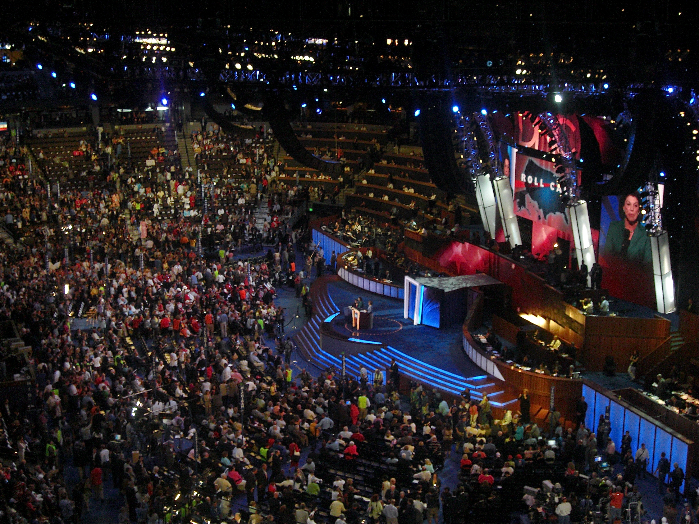
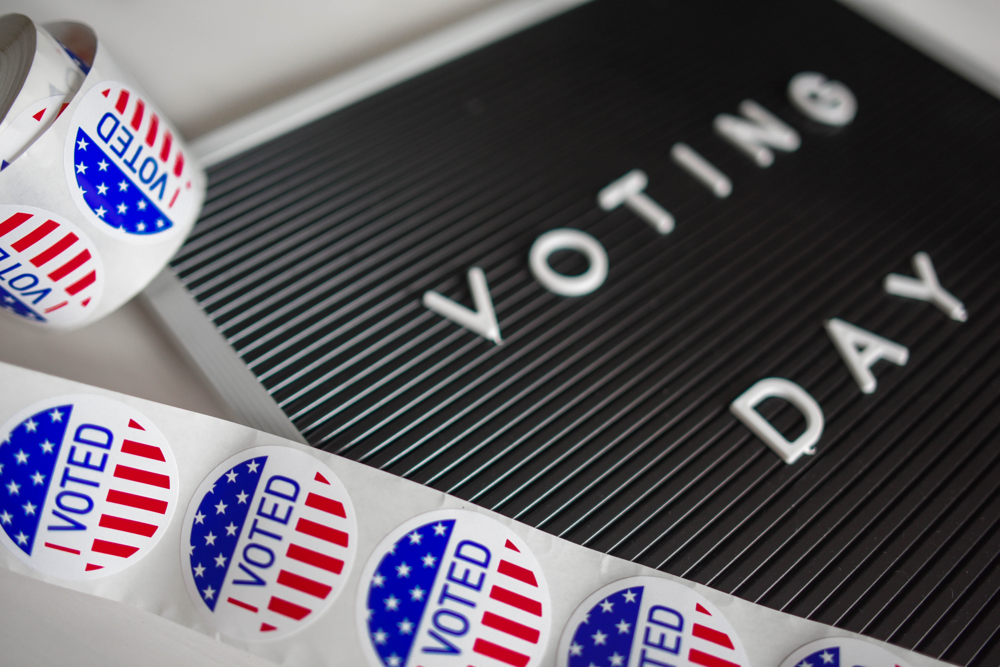

# Election Security And Policy Concerns James P. Howard, II <<james.howard@jhu.edu>><br/> 2020 INFORMS—Coronavirus Edition
## About Me * Data scientist at the Johns Hopkins Applied Physics Laboratory * Candidate for state delegate in Maryland in 2018 * Candidate for convention delegate in 2020 * Other: * Served as Election Judge in 2004 * Worked on numerous campaigns as volunteer * Counted ballots in 1998 * Done this my entire life...
<figure class="featured left"> </figure> ## Elections in America * Extremely decentralized * 51 different state elections * DC is a state for this purpose * Most devolve election authority * Local government entities run * Counties/cities do nuts and bolts * Share results with state authorities * State election authorities tabulate * Tabulate multijurisdiction results * Manage reporting and compliance
<figure class="featured right">  <figcaption>A nominating convention (<a href="https://en.wikipedia.org/wiki/User:Qqqqqq">Qqqqqq</a> at <a href="https://en.wikipedia.org/wiki/">English Wikipedia</a>)</figcaption> </figure> ## Presidential Elections <div> * Many moving parts * The primaries * The general * System has grown over time * Mostly an <emph>ad hoc</emph> collection of processes * Almost none of this system was designed * And the Republicans and Democrats<br/>do primaries differently... </div>
<div class="featured right" width="45%"> ## Republican Party * Allocates delegates to states * Base amounts for each state * More for each congressional district * Some allocations for territories and DC * Superdelgates * Some reserved positions for state party representatives * And some for governors and other state elected officials </div> <div class="featured left" width="45%"> ## Democratic Party * Allocates delegates to states * Proprortion of votes each state gave to Democratic candidates in three prior elections * Also allocates some to 5 U.S. territories and Democrats abroad * Superdelgates * Reserved positions for major Democratic officeholders * Governors, members of Congress, and "distinguished party leaders" </div>
<figure class="featured right"> <img src="img/voting.jpg" /> </figure> <div class="featured left" width="45%"> ## More About Primaries * These are *private* elections * They are run by the state, but private * You don't actually vote for the candidate * You vote for the delegates who vote for the candidate * Each state may differ in approach * Elections * Caucuses * Scheduled whenever </div>
<figure class="featured right">  </figure> <div class="featured left" width="45%"> ## Election Day! * You vote! * You may vote for a candidate... * The state tallies up all the votes * Allocates *all* of the states Electoral votes to the candidate * Except Nebraska and Maine...because, of course * This is why the "loser" may win * None of this is Federally-run * It's all done by the states </div>
<figure class="featured right"> <img src="img/congress.jpg" /> </figure> <div class="featured left" width="45%"> ## The Electoral College * State certifies the results * *Only* 50 states and DC *o territories, other * Electors get selected * Electors cast their ballots * Which are usually the same * But sometimes, not * "Faithless electors" * And all the Electoral College votes are sent to Congress </div>
<figure class="featured right"> </figure> <div class="featured left" width="45%"> ## Mail-In Balloting * We've had mail-in balloting forever * We call it absentee voting! * Some states already do exclusive mail-in voting: * Five states, starting in 2000 * Other states, notably California rolling it out * No substantive issues with security found * Higher voter participation found, but may not vote-stick * Voter fraud is basically non-existent </div>
## What Does This Mean? * The entire electoral system is extremely decentralized * No local area oversees more than about 10M population * Los Angeles County: 4.3M voters * Mean county population is about 100,000 * Mean registered voters somewhere around 50,000 * State rules differ from state to state * Counties have some freedom in implementing rules * Many different standards and transfer mechanisms * Strong diversification of methods and mechanisms
## Why does this matter?
## Hacking the election is hard!